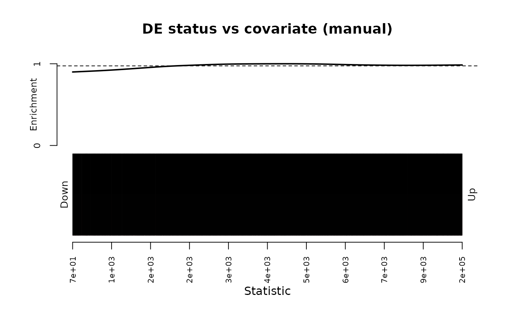
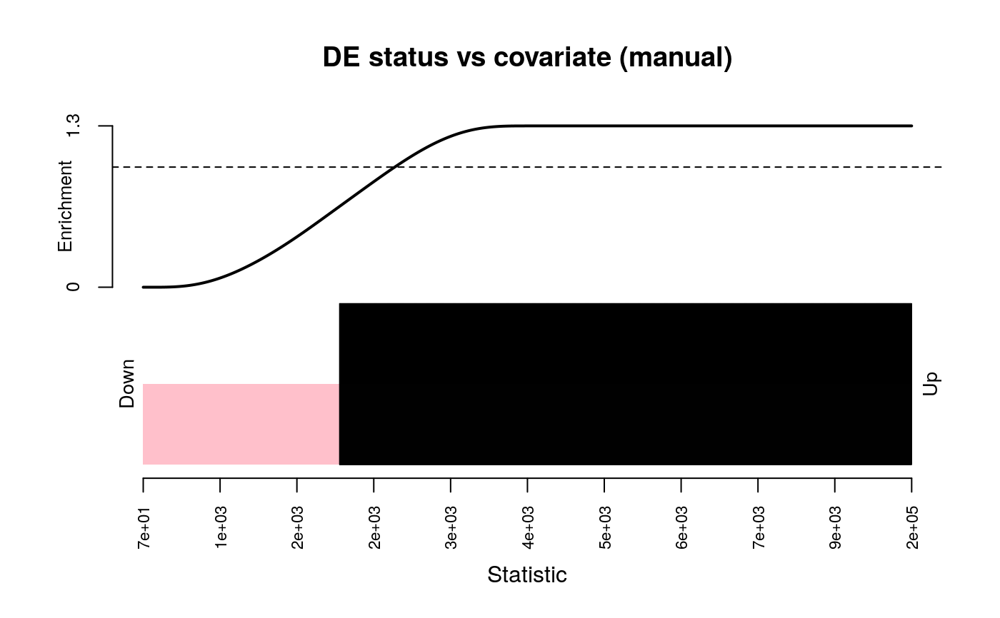

ora.RdThis function wraps limma::kegga() to perform biased overrepresntation
analysis over gene set collection stored in a GeneSetDb (gsd) object. Its
easiest to use this function when the biases and selection criteria are
stored as columns of the input data.frame dat.
ora( gsd, dat, selected = "significant", groups = NULL, feature.bias = NULL, universe = NULL, restrict.universe = FALSE, plot.bias = FALSE, ..., as.dt = FALSE, .pipelined = FALSE )
| gsd | The GeneSetDb |
|---|---|
| dat | A data.frame with feature-level statistics. Minimally, this should
have a |
| selected | Either the name of a logical column in |
| groups | Encodes groups of features that we can use to test selected
features individual, as well as "all" together. This can be specified by:
(1) specifying a name of a column in |
| feature.bias | If |
| universe | Defaults to all elements in |
| restrict.universe | See same parameter in |
| plot.bias | See |
A data.frame of pathway enrichment. The last N colums are enrichment
statistics per pathway, grouped by the groups parameter. P.all are the
stats for all selected features, and the remaingin P.* columns are for
the features specifed by groups.
In principle, this test does what goseq does, however I found that
sometimes calling goseq would throw errors within goseq::nullp() when
calling makesplines. I stumbled onto this implementation when googling
for these errors and landing here:
https://support.bioconductor.org/p/65789/#65914
The meat and potatoes of this function's code was extracted from
limma::kegga(), written by Gordon Smyth and Yifang Hu.
Note that the BiasedUrn CRAN package needs to be installed to support biased enrichment testing
Young, M. D., Wakefield, M. J., Smyth, G. K., Oshlack, A. (2010). Gene ontology analysis for RNA-seq: accounting for selection bias. Genome Biology 11, R14. http://genomebiology.com/2010/11/2/R14
dgestats <- exampleDgeResult("human", "ensembl") gdb <- getMSigGeneSetDb("h", "human", "ensembl") # Run enrichmnent without accounting for any bias nobias <- ora(gdb, dgestats, selected = "selected", groups = "direction", feature.bias = NULL) # Run enrichment and account for gene length lbias <- ora(gdb, dgestats, selected = "selected", feature.bias = "effective_length") # plot length bias with DGE status plot_ora_bias(dgestats, "selected", "effective_length")# induce length bias and see what is the what ............................... biased <- dgestats[order(dgestats$pval),] biased$effective_length <- sort(biased$effective_length, decreasing = TRUE) plot_ora_bias(biased, "selected", "effective_length")etest <- ora(gdb, biased, selected = "selected", groups = "direction", feature.bias = "effective_length")